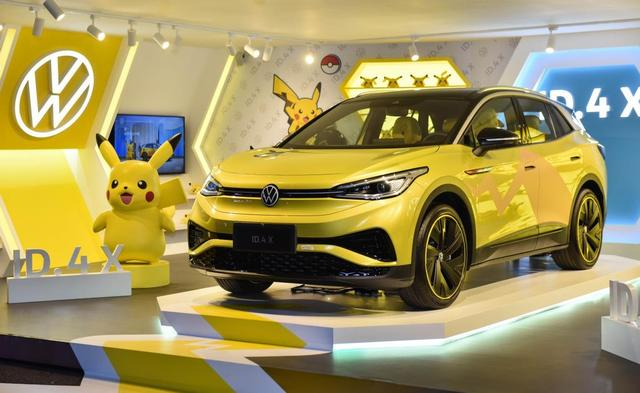

A new project Eve here!
Recently, my partner is planning to buy her first car. As a former motor mechanic and a fan of data analysis, I decided to provide the best advice to her :)
On the other hand, I am considering buying my first pure electronic car since my father bought a Volkswagen ID.4X Pikachu version three weeks ago. Sometimes I think my father has a more innovative mindset to embrace the latest technology than me. LOL

ID.4 is an excellent pure electronic car at an affordable price in China. However, I guess Volkswagen won’t bring it to the Australian market this year. I guess the main reason is that China has comprehensive manufacturing chains to produce almost every piece of component and assemble them.
The first step is to collect the data from the internet, which I have done 65% including over 40000 car data in Australia. I will study these data and try to create a model to evaluate the car price assisting my partner’s decision making. I also shared my scraping coding work on Github, and feel free to read and use it.
Some sample data:
## title price odometer body
## 1: 2011 BMW 1 Series 118i E87 Auto MY11 $8,222* 183,000 km Hatch
## 2: 2011 BMW 3 Series 320d Lifestyle E90 Auto MY11 $9,000* 185,000 km Sedan
## 3: 2011 BMW 1 Series 118i E87 Manual MY11 $9,500* 230,000 km Hatch
## 4: 2011 BMW 3 Series 320d Lifestyle E90 Auto MY11 $10,900* 169,000 km Sedan
## 5: 2011 BMW 3 Series 320d Lifestyle E90 Auto MY11 $10,990* 161,000 km Sedan
## 6: 2011 BMW 1 Series 118i E87 Auto MY11 $11,990* 119,817 km Hatch
## trans engline state seller state_2
## 1: Automatic 4cyl 2.0L Petrol NSW\n Private Seller Car NSW\n
## 2: Automatic 4cyl 2.0L Turbo Diesel QLD\n Dealer Used Car QLD\n
## 3: Manual 4cyl 2.0L Petrol QLD\n Private Seller Car QLD\n
## 4: Automatic 4cyl 2.0L Turbo Diesel NSW\n Private Seller Car NSW\n
## 5: Automatic 4cyl 2.0L Turbo Diesel NSW\n Private Seller Car NSW\n
## 6: Automatic 4cyl 2.0L Petrol QLD\n Private Seller Car QLD\nThe second part is to build a calculator by Shiny and insert it into my blog. This calculator can predict the money saved by the switch from fuel combustion vehicle to pure electronic car in long-term period. Learning Shiny is a critical task in this project. By presenting the model through Siny, everyone can use the tool without knowing to program it.
Hoping I can complete this project by October.